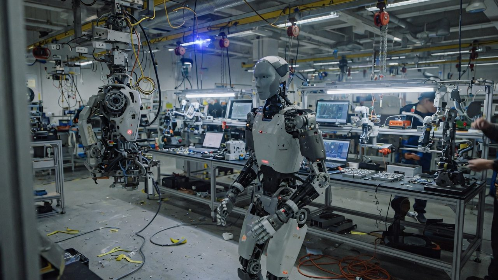

Reporting from inside the deployment layer
The desk’s core output. Long-form notes written from the floor — hotels, factories, showrooms and service sites — where China’s robotics transition is actually visible.
Why reporting from inside matters
Robotics in China is no longer best understood through product launches alone. The more important story is the accumulation of deployment environments: hotel corridors, managed service surfaces, semi-public showrooms, and manufacturing spaces where machines are no longer a future promise but a present layer.
Remote analysis sees the announcement. The desk sees the install — what is actually running, how it behaves under real conditions, and the distance between a published capability and an operating one. That distance is the report.
What a field report contains
- Deployment visibility vs actual capability — what a site demonstrates publicly against what the hardware can really do.
- Iteration speed — why Shenzhen compresses prototyping, sourcing and integration into a single geography, and what that does to timelines.
- The bridge from spectacle to infrastructure — the specific signals that a machine has crossed from demonstration into operational use.

From robot lobbies to factory-floor assembly visibility
The newest long-form desk note tracks the visible convergence between hospitality robotics, robot-dog presence, assembly-floor adjacency and the Shenzhen hardware moat — and what that convergence signals for the next deployment cycle.
Unlock subscriber access →Observed surfaces
A field report is grounded in what the desk actually sees. Three representative surfaces from the current transition:
Humanoid presence in premium service-facing architecture
Human-form systems positioned where the public meets them first.
Quadruped form factor in managed interior environments
The deployment zone between demo and duty.

Shenzhen as vantage point, platform and signal field
The city as the instrument the desk reports through.
Read the desk from the inside
Field reports reach subscribers first. Start with a field briefing or request the full report archive.
Request access →